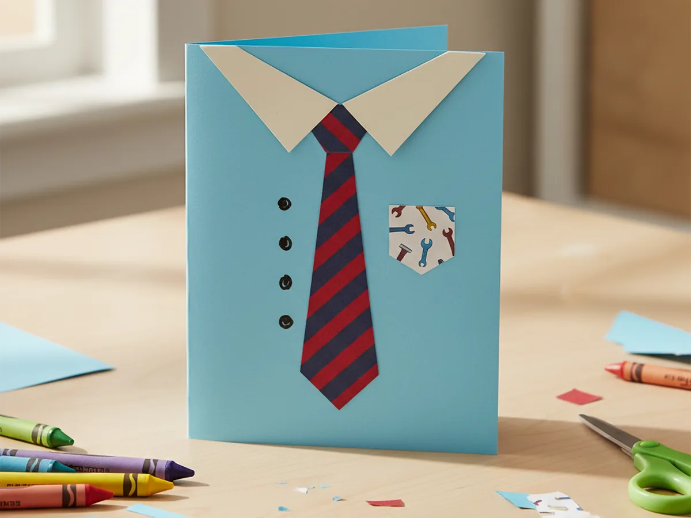
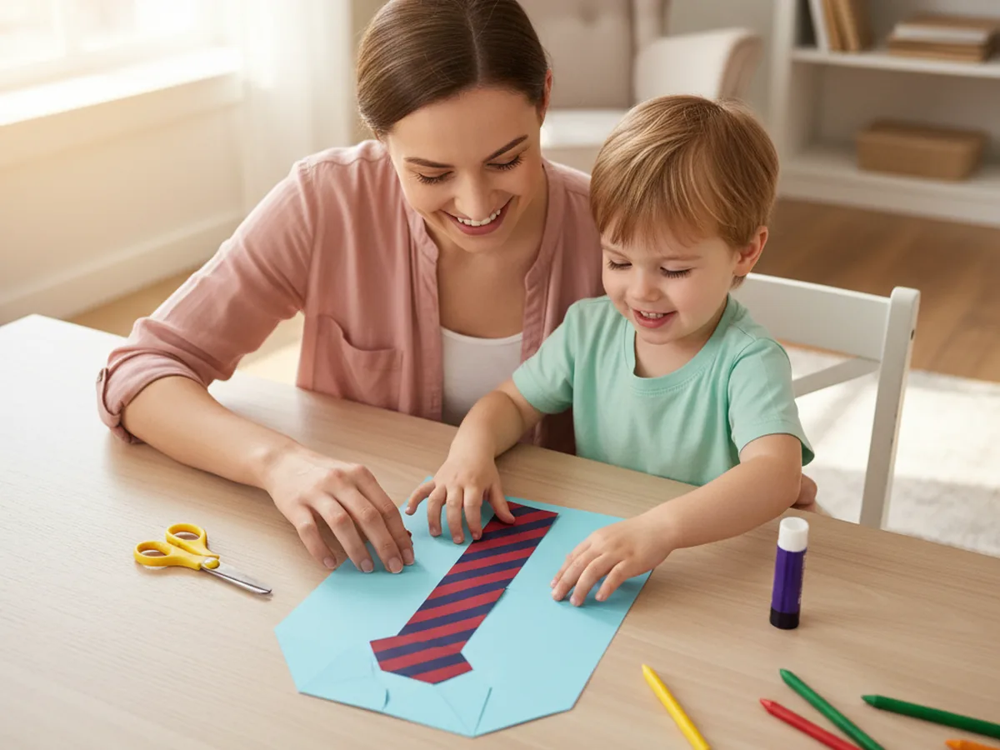
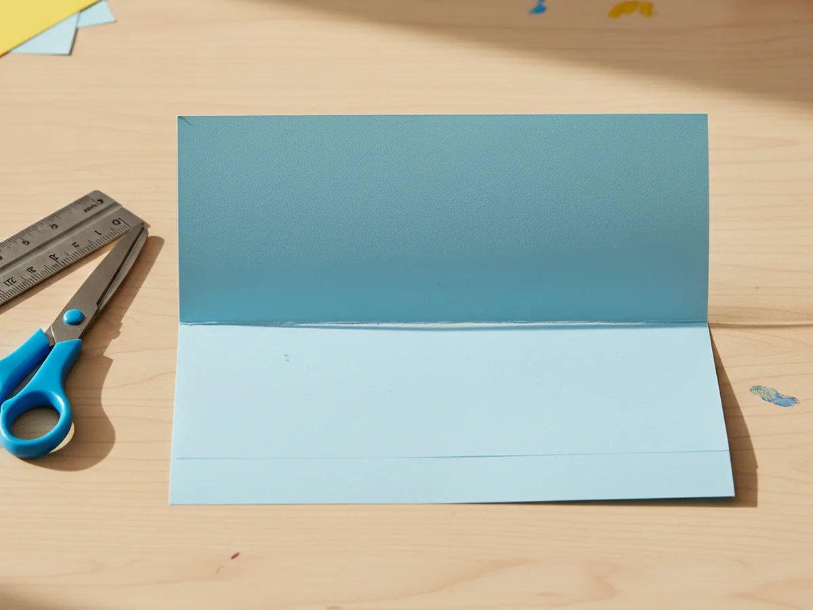
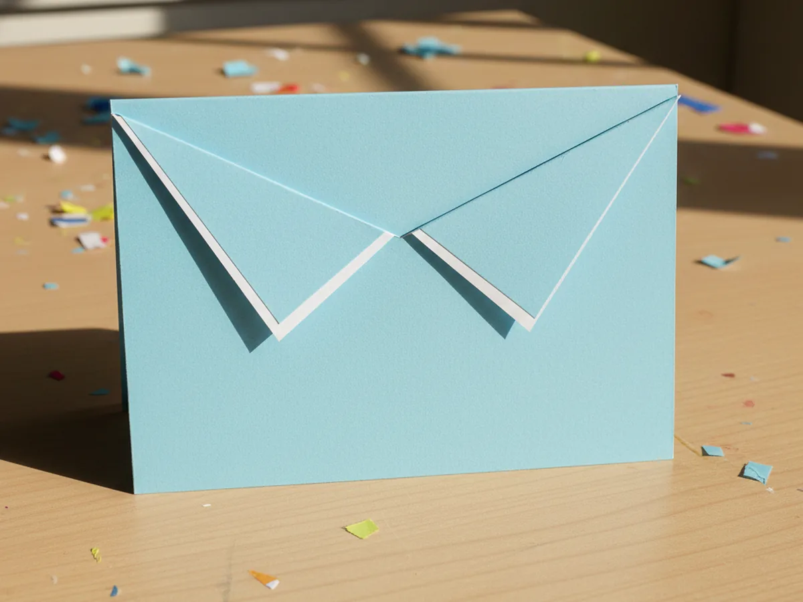
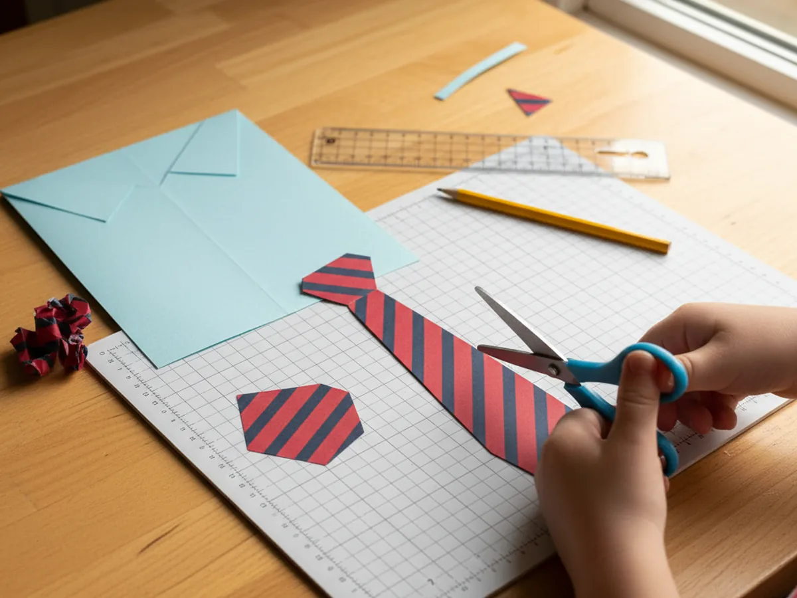
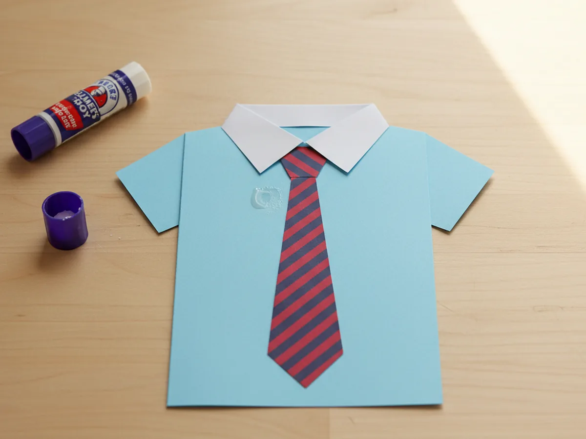
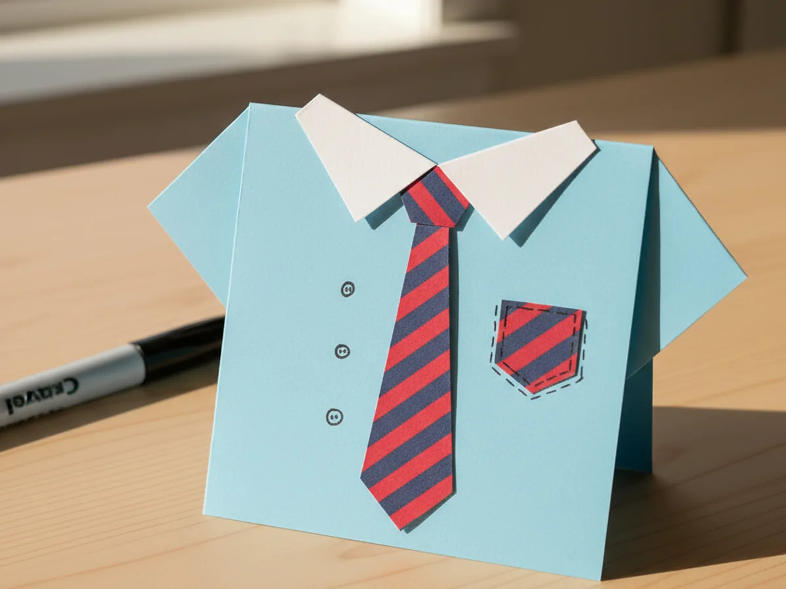
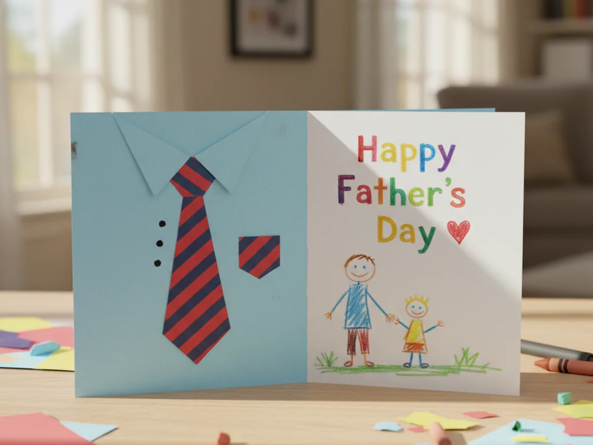

If Father's Day is sneaking up and you want a sweet keepsake your child can actually make from start to finish, this Father's Day paper craft is the cozy answer. With one sheet of cardstock, a strip of patterned paper, and about 30 minutes at the kitchen table, you and your little one can craft a stand-up shirt and tie card that Dad will keep on his desk for years. 🤝
The whole project uses simple folds, easy cuts, and zero special skills, so even a four-year-old can take real ownership of the build. By the end you will have a tiny handmade gift that looks adorable, lifts Dad's mood, and gave you a slow, screen-free afternoon together.
Why Kids Love This Craft
There is something extra exciting about a craft made just for Dad. Most days, the art that comes home from school goes to Mom or onto the fridge, so getting to design a card specifically for the other most important person in the house feels like a small celebration. Watching their plain rectangle of paper turn into a tiny shirt and tie gives them an "I made this myself" thrill they will remember.
The steps also work in a lot of quiet skill-building. Folding the cardstock builds early symmetry awareness, cutting the tie shape supports fine motor control, and adding the buttons strengthens hand-eye coordination. Because every element is small and forgiving, even slightly wobbly cuts still look like part of the charm. This kind of Father's Day craft for kids hits the sweet spot of easy enough to finish and pretty enough to feel proud of.
And then there is the gifting moment, which is honestly the best part. When your child hands their finished paper craft for Father's Day to Dad and watches his face light up, you get one of those tiny family memories that quietly stays with everyone. 👔

What You'll Need
Here is everything you need to make this Father's Day paper craft together at home. Lay each supply out before you sit down so the project flows smoothly and no one has to hop up mid-craft.
- Astrobrights Cardstock, 65 lb, Primary 5-Color Assortment (250 Sheets), sturdy 8.5 x 11 inch cardstock in cheerful colors that hold a crisp shirt fold.
- Crayola Construction Paper (240 Sheets, 12 Colors), softer paper for cutting the collar piece and any small accent shapes.
- Vintage Pattern Scrapbook Paper, 12 x 12 Inch (24 Sheets), double-sided printed paper for cutting a handsome tie that looks like real Dad fabric.
- Elmer's All Purpose School Glue Sticks (30 Count), clean and washable, perfect for gluing the tie and collar without any wet mess.
- Fiskars 5 Inch Blunt-Tip Kids Scissors, safe blunt blades that still cut cardstock and patterned paper cleanly for little hands.
- Crayola Broad Line Markers (10 Classic Colors), for adding button dots, a pocket outline, and any sweet drawings inside the card.
- Avery Foil Star Stickers, Assorted Colors (440 per Pack, 10 Packs), optional shiny stars that work beautifully as fancy shirt buttons.
- Sharpie Metallic Fine Point Markers, Silver, Gold, Bronze (Pack of 4), for writing a fancy "Happy Father's Day" message on the front of the shirt.
- A pencil, for lightly tracing the tie shape before cutting.
- A ruler, for keeping the shirt rectangle and the tie nice and straight.
Step-by-Step Instructions
This Father's Day paper craft is genuinely forgiving and beginner-friendly, so go at your child's pace, let them help with every fold, and have fun building the shirt together.
Step 1: Fold the Cardstock into a Shirt Card
Start with one sheet of light blue cardstock, roughly 8.5 by 11 inches. Lay it flat on the table in portrait orientation, then fold it in half from bottom to top so the open edge sits at the top and the folded edge sits at the bottom. Crease the fold firmly with a fingernail or the side of a closed glue stick. This horizontal fold becomes the body of your shirt and gives your paper Father's Day craft a sturdy card base that stands up on its own.
Let your child pick the shirt color. Light blue looks the most classic, but soft pink, sunny yellow, or mint green make adorable shirts too.

Step 2: Fold the Top Corners Down to Make a Collar
With the open edge of the card still at the top, take the top right corner of just the front panel and fold it down and inward toward the center, forming a triangle that creates one half of a shirt collar. Repeat with the top left corner so the two triangles meet in the middle and form a clean V. Crease both folds firmly. The little V opening you see at the top of the card is the spot where the tie will tuck in for this kids Father's Day paper craft.
Step back and admire it together. The cardstock already looks like a dress shirt, and you have barely done anything yet.

Step 3: Cut Out the Paper Tie
From your patterned scrapbook paper or a bright cardstock color, cut a tall tie shape about four inches long and one inch wide at the bottom. The tie body should be a long thin triangle pointing downward, then add a smaller trapezoid on top for the knot. If freehand cutting feels tricky, lightly pencil-trace the outline first so your child has a clear line to follow.
This is the moment your handmade Father's Day card really starts to feel like Dad. Pick a pattern that reminds your child of him, whether that means stripes, polka dots, plaid, or his favorite color.

Step 4: Glue the Tie Under the Collar
Run a small line of glue stick along the back of the tie knot and the very top of the tie body. Slide the knot into the V opening between the two collar flaps so the top of the knot peeks just behind them, then press the tie firmly into place. The body of the tie should hang straight down the front of the shirt, ending about an inch above the bottom of the card. This step is where the whole Father's Day paper craft snaps into focus and finally looks like a real little outfit.
If the tie sits slightly crooked, just peel it back up while the glue is fresh and reposition. Glue sticks give you plenty of working time.

Step 5: Add Buttons and a Tiny Pocket
Time for the cute details. Using a marker or a few foil star stickers, add two or three small button dots down the center of the shirt below the tie, evenly spaced. If you saved a scrap of patterned paper, cut a tiny square pocket about one inch wide and glue it onto the chest, slightly to the side of the tie. A small marker outline gives the pocket a real stitched look. These finishing touches turn your paper craft for Dad from a fold of paper into a tiny piece of art.
Let your child take the lead on placement. The shirt is theirs to design, and a little bit of asymmetry just makes it feel more handmade and more loved.

Step 6: Write a Sweet Message Inside
Open the card and let your child write or dictate a message to Dad. Younger kids can simply scribble "I love you" or draw a stick-figure family. Older kids might write "Happy Father's Day" on one side and three things they love about Dad on the other. A metallic marker on the colored cardstock makes the message look extra special. Hand the finished paper craft to your little one and let them be the one to surprise Dad with it on Father's Day morning. 💛
Stand the finished card on a shelf, a desk, or the breakfast table where Dad will spot it first thing. A handmade Father's Day paper craft like this almost always ends up keeping its spot for the rest of the year.

Variations to Try
Grandpa Edition: Use a softer beige or gray cardstock for the shirt and add a paper bow tie or suspenders instead of a long tie. The same craft becomes a sweet keepsake for Grandpa, Papa, or Pop on Father's Day.
Toddler-Friendly Sticker Shirt: For very young kids, skip the cutting and let your toddler decorate a pre-cut shirt with star stickers, washi tape stripes, and big crayon scribbles. The hands-on play stays joyful and the finished card is just as proud.
Mini Tie Bookmark: Use the leftover scraps to make a bookmark shaped like a tie. Slide it into Dad's favorite book or planner so he finds a little reminder of his kid every time he opens it.
Final Thoughts
This Father's Day paper craft is one of those quiet projects that looks like it took real skill, but actually comes together with simple folds, easy cuts, and a few sweet finishing touches. The finished shirt and tie card becomes a tiny piece of family history, and the giddy face on your little one when Dad opens it is the very best part. ✨
If your child loved making this Father's Day card, save the tutorial on Pinterest so you can come back to it next year or share it with a friend looking for a sweet handmade gift idea. Happy crafting, friend.
More Crafts You'll Love
If your little one enjoyed making this card for Dad, they will love these other sweet handmade gift crafts next: